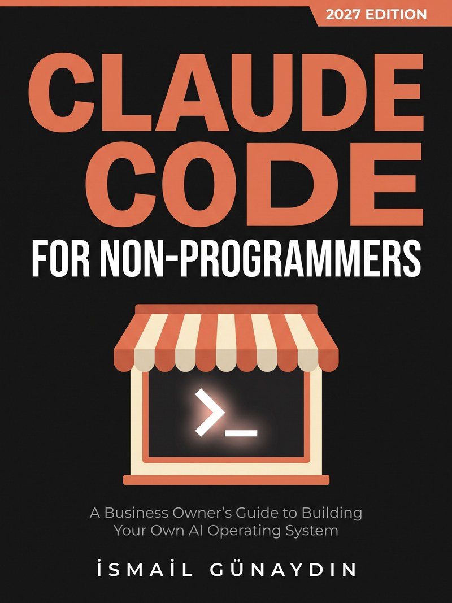

Free Book Guides / Claude Code for Non-Programmers

Free guides and tools from Claude Code for Non-Programmers (2027 Edition): a guide to stopping hallucinations, a 30-day learning plan sheet, MCP explained in slides and a printable security checklist.
By İsmail Günaydın. See the book on Amazon
Open all the free files in one Google Drive folder
General information, not legal or security advice. Claude Code changes often, so check Anthropic's official documentation for your version. This material is independent and not affiliated with or endorsed by Anthropic. Claude and Claude Code are trademarks of Anthropic.